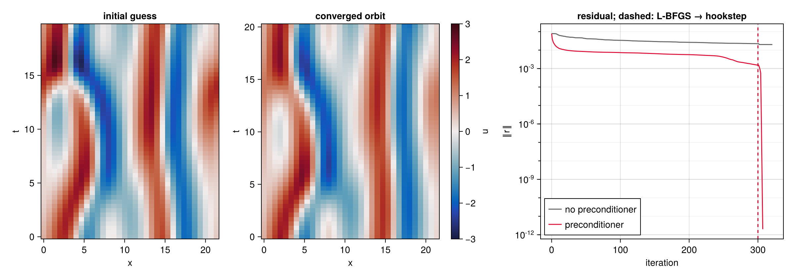
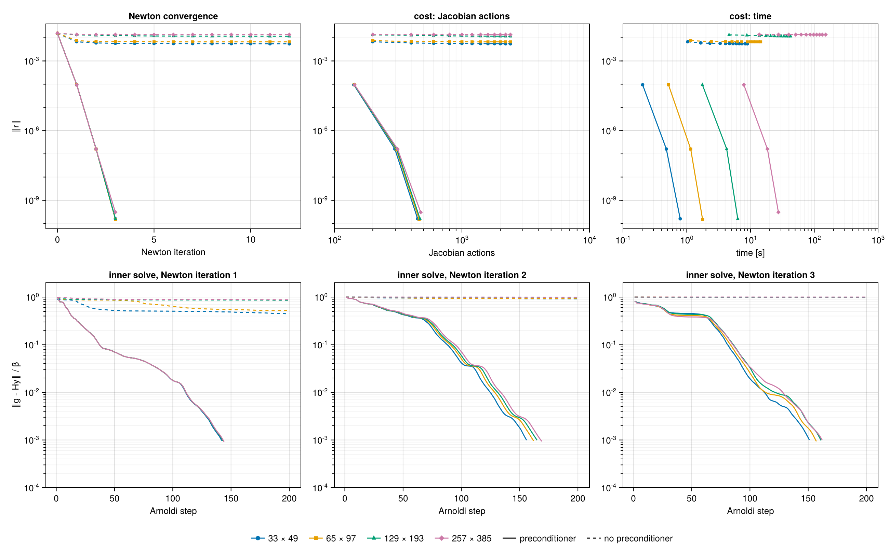
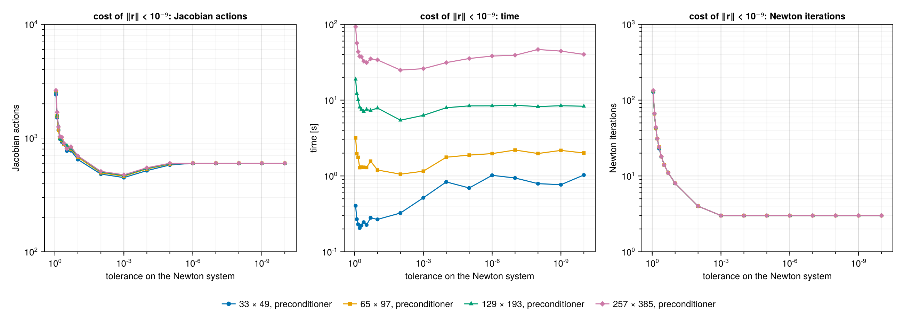
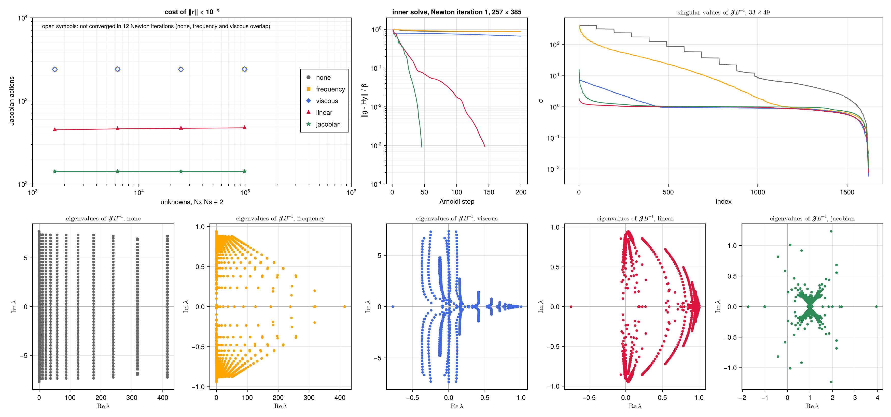

Kuramoto–Sivashinsky equation
The Kuramoto–Sivashinsky equation is the standard testbed for the computation of invariant solutions of spatio-temporally chaotic PDEs. Unlike the Lorenz system, its space-time problem is stiff in both directions: along rescaled time through the frequency, and along space through a fourth-order dissipation. This page searches for relative periodic orbits on the domain studied by Cvitanović, Davidchack & Siminos (2010), finds the shortest pre-periodic orbit of the system, studies the convergence of the hookstep on grids of up to $10^5$ unknowns, and compares five preconditioners. The scripts are in examples/kuramoto_sivashinsky/: ks.jl defines the model, example.jl, convergence.jl and preconditioners.jl produce the figures.
Problem
The equation
\[\partial_t u = -u\,\partial_x u - \partial_x^2 u - \partial_x^4 u , \qquad x \in [0, L) , \tag{1}\]
with periodic boundary conditions and $L = 22$, is chaotic. It is equivariant under translations $u(x) \to u(x + \ell)$ and under the reflection $u(x) \to -u(-x)$, it is Galilean invariant, $u(x, t) \to u(x - Ct, t) + C$, and it conserves the mean of $u$, set to zero here. Because of the translation symmetry, its recurrent solutions are relative periodic orbits, which repeat after a period $T$ up to a shift $\ell$; in the moving frame they are periodic, with drift speed $c = -\ell/T$. The unknowns are the field over one period, the log-frequency and the drift speed, and $\partial_x$ is the derivative along the single drift direction.
Discretisation
A KSField holds the values $u(x_j, s_l)$ on the grid
\[x_j = (j - 1)\,\frac{L}{N_x}, \qquad s_l = (l - 1)\,\frac{2\pi}{N_s}, \qquad j = 1, \dots, N_x, \quad l = 1, \dots, N_s , \tag{2}\]
with $N_x$ and $N_s$ odd, so that no unpaired Nyquist mode breaks the skew-adjointness of the spectral derivatives. A KSTransformedField holds its Fourier coefficients $\hat u_{k n}$, real FFT along $x$ and full FFT along $s$, with $k = 2\pi m / L$, $0 \le m \le (N_x - 1)/2$, and $|n| \le (N_s - 1)/2$. The transforms are planned once, in a KSFFT owned by the grid. Derivatives and the linear operator $k^2 - k^4$ are applied to the coefficients, the quadratic term on the grid. The inner product is the mean over the grid points,
\[\langle u, v\rangle = \frac{1}{N_x N_s} \sum_{j, l} u(x_j, s_l)\, v(x_j, s_l) , \tag{3}\]
the discretisation of $\frac{1}{2\pi L}\int_0^{2\pi}\!\!\int_0^L u\,v\;\mathrm{d}x\,\mathrm{d}s$, so that norms and tolerances do not depend on the resolution.
Pinning the mean. Galilean invariance has a consequence for the space-time problem. Adding a constant $C$ to an orbit and subtracting it from the drift speed gives another solution: the pair $(\delta u, \delta c) = (C, -C)$ is a null vector of the Jacobian, and since a constant is orthogonal to both $\partial_s u$ and $\partial_x u$, the phase conditions do not remove it. The Newton system is then singular, and a search converges to an arbitrary member of a one-parameter family of equivalent solutions, with different means and drift speeds. The model pins the mean instead:
\[N(u) = (k^2 - k^4)\,\hat u - \tfrac12\,\partial_x(u^2) - \langle u\rangle , \tag{4}\]
where $\langle u\rangle$ is the space-time mean. The KS right-hand side has zero mean, so the mean component of the residual is $\langle u\rangle$, and the zeros of the residual are the KS solutions of zero mean. The pinning term is self-adjoint. The linearised operator about $U$ is $L v = (k^2 - k^4)\,v - \partial_x(U v) - \langle v\rangle$, and its adjoint $L^+ w = (k^2 - k^4)\,w + U\,\partial_x w - \langle w\rangle$; both are exact for the discrete operators, because the derivatives are exactly skew-adjoint in (3). With the mean pinned, the condition number of $\mathcal{J}$ at the orbit below is $2.4 \times 10^{4}$, against $10^{16}$ without pinning. With the log-frequency and the drift speed, the problem has
\[N = N_x N_s + 2 \tag{5}\]
real unknowns. The grids used below are
| grid | $N_x \times N_s$ | unknowns $N$ | largest wavenumber $k_{\max}$ | largest $k_{\max}^4$ |
|---|---|---|---|---|
| base | $33 \times 49$ | 1 619 | 4.6 | $4.4 \times 10^{2}$ |
| $\times 2$ | $65 \times 97$ | 6 307 | 9.1 | $7.0 \times 10^{3}$ |
| $\times 4$ | $129 \times 193$ | 24 899 | 18.3 | $1.1 \times 10^{5}$ |
| $\times 8$ | $257 \times 385$ | 98 947 | 36.6 | $1.8 \times 10^{6}$ |
The last column measures the stiffness of the dissipation, which grows by four orders of magnitude from the base grid to the finest. It also limits the attainable residual: rounding errors of relative size $10^{-16}$ in the quadratic term are amplified by up to $k_{\max}^4$, and on the finest grid the residual stagnates around $10^{-10}$. The convergence studies below therefore stop at $\lVert r\rVert < 10^{-9}$.
Initial guess
A trajectory of (1) is integrated with the fourth-order exponential time-differencing Runge–Kutta scheme of Kassam & Trefethen (2005), step $0.05$, from a random initial condition of zero mean, for 400 time units after a transient of 200. Near-recurrences are sought among the snapshots, every $0.25$ time units, by minimising $\lVert u(t_0 + T_0) - u(t_0 + \cdot\, ; \ell)\rVert$ over the start $t_0$, the lag $T_0 \in [12, 20]$ and the shift $\ell$. Starts where the trajectory is nearly stationary are excluded: at $L = 22$ the dynamics visits equilibria and travelling waves, and without this filter the best recurrence is a nearly steady stretch, which converges to an equilibrium rather than to an orbit. The best recurrence has relative error 0.17, with $T_0 = 20.00$ and $\ell = 0.69$. The segment from $t_0$ is integrated again on the $N_s$ rescaled times, and written in the frame drifting with $c = -\ell/T_0$.
The shortest pre-periodic orbit
From this guess, with $N_x \times N_s = 33 \times 49$, the hookstep alone converges, without L-BFGS, provided the Newton systems are preconditioned. With Krylov spaces of at most 150 vectors, $\tau = 10^{-3}$ and an initial trust-region radius $0.1$:
| preconditioner (see below) | Newton iterations | of which hooksteps | Jacobian actions | final $\lVert r\rVert$ | orbit |
|---|---|---|---|---|---|
| none | 50 | — | 7500 | $2.5 \times 10^{-2}$ | not converged |
| linear | 13 | 8 | 1863 | $2.9 \times 10^{-14}$ | $T = 20.5057$ |
| jacobian | 9 | 5 | 441 | $1.2 \times 10^{-12}$ | $T = 20.5057$ |
From $\lVert r\rVert = 7.8 \times 10^{-2}$; at most 50 Newton iterations.

Top: the initial guess and the converged orbit over one period, in the fixed frame. Middle and bottom: the search without preconditioner, stopped after 10 iterations, and with the jacobian preconditioner; left, the residual against the Newton iterations, with hooksteps on the boundary of the trust region (open symbols) and full Newton steps (filled); right, the relative residual of the GMRES solution of the Newton system against the Arnoldi steps, one curve per Newton iteration, with the tolerance $10^{-3}$ dashed.
Without preconditioner every Newton system stalls at the largest Krylov space, with a relative residual between $0.3$ and $1$: the steps, least-squares solutions in a Krylov space far too small, reduce the residual very little, by a factor of three in 50 iterations. With the jacobian preconditioner each Newton system is solved to $10^{-3}$ in 45 to 55 Arnoldi steps, at every iteration, and the search has two phases. In the first five iterations the Newton step is longer than the trust region, $\lVert B\,\delta p\rVert$ between $0.3$ and $1.5$ against a radius of $0.1$ to $0.2$, and the hookstep takes the best part of it that the trust region allows; the residual decreases slowly, from $7.8 \times 10^{-2}$ to $1.5 \times 10^{-2}$. From the sixth iteration the full Newton step lies inside the trust region, and the residual drops to $1.2 \times 10^{-3}$, $1.5 \times 10^{-6}$, $1.2 \times 10^{-9}$ and $1.2 \times 10^{-12}$, converging linearly with ratio close to $\tau = 10^{-3}$ (see Tolerance of the inner solve).
The converged orbit has zero mean, zero drift speed and period $T = 20.505745$. It is the shortest pre-periodic orbit of the system, $\mathrm{PPO}_{10.25}$ in the notation of Cvitanović, Davidchack & Siminos (2010), traversed twice: half a period later the field is the reflection of its initial state, $u(x, s + \pi) = -u(x_0 - x, s)$ with $x_0 = 12.139$, to a relative error of $4 \times 10^{-5}$ limited by the resolution of the search over $x_0$, and $T/2 = 10.2529$. The formulation does not exploit the reflection symmetry, so it finds the orbit as a periodic orbit of twice the period; the drift speed, an unknown of the search, converges to zero.
Convergence of the hookstep
As for the Lorenz system, the converged orbit is interpolated spectrally to grids refined by 1, 2, 4 and 8 in both directions, its log-frequency and drift speed are perturbed by $0.01$ and its field by 1% on the modes $|m| \le 3$, $|n| \le 3$, and the hookstep is run with the Newton system solved to $\tau = 10^{-3}$, without preconditioner and with the linear one.

Top: residual against the Newton iterations, the Jacobian actions and the computing time. Bottom: relative residual of the Newton system after each Arnoldi step, for the first three Newton iterations. Solid lines: linear preconditioner; dashed: none.
| grid | unknowns | $\lVert r\rVert$, no preconditioner | Jacobian actions | $\lVert r\rVert$, linear preconditioner | Newton iterations | Jacobian actions | time |
|---|---|---|---|---|---|---|---|
| base | 1 619 | $5.5 \times 10^{-3}$ | 2400 | $1.6 \times 10^{-10}$ | 3 | 449 | 0.3 s |
| $\times 2$ | 6 307 | $6.6 \times 10^{-3}$ | 2400 | $1.5 \times 10^{-10}$ | 3 | 462 | 1.5 s |
| $\times 4$ | 24 899 | $1.2 \times 10^{-2}$ | 2400 | $1.6 \times 10^{-10}$ | 3 | 469 | 6.0 s |
| $\times 8$ | 98 947 | $1.4 \times 10^{-2}$ | 2400 | $3.0 \times 10^{-10}$ | 3 | 475 | 26.8 s |
Final residual and cost, from $\lVert r\rVert = 1.6 \times 10^{-2}$. Without preconditioner the search is stopped after 12 Newton iterations.
With the preconditioner, Newton converges in 3 iterations on every grid, and the cost in Jacobian actions grows by 6% over a 61-fold increase of the number of unknowns: the method is mesh-independent. The computing time grows by factors between 4 and 5 between successive grids, close to the factor of four by which the number of unknowns grows, times the logarithm of the FFTs: the work per unknown is nearly constant, the best that can be expected. The residual drops from $1.6 \times 10^{-2}$ to $1.2 \times 10^{-4}$, $1.5 \times 10^{-7}$ and $2 \times 10^{-10}$: after the first step the convergence is linear with ratio $10^{-3}$, the tolerance of the inner solve, rather than quadratic. This is the behaviour of an inexact Newton method whose forcing term is constant (Dembo, Eisenstat & Steihaug 1982): each step reduces the residual of the linear model by $\tau$, and once the error of the linearisation, quadratic in the step, falls below that, $\tau$ sets the rate.
Each inner solve takes 145 to 170 Arnoldi steps, and the curves of the four grids nearly coincide. They descend in stages, with plateaus, for instance at a relative residual of about $0.4$ during the first 70 steps of the third iteration: GMRES first resolves the eigenvalues of $\mathcal{J}B^{-1}$ that lie far from one, on the arcs towards $\pm\mathrm{i}$ described in Preconditioners, and only then converges at the rate set by the cluster. These eigenvalues belong to the large scales, which are the same on every grid, hence the independence of the resolution.
Without preconditioner, every inner solve exhausts the Krylov space of 200 vectors: in the first Newton iteration the relative residual of the Newton system stagnates between $0.45$ and $0.9$, and in the following ones it stays close to one. The steps are almost useless, and after 12 iterations and 2400 Jacobian actions the residual has dropped by a factor of three on the base grid, and hardly at all on the finest. Unlike the Lorenz system, where the unpreconditioned solve succeeds as long as the Krylov space can span the whole problem, here the problem is larger than the Krylov space already on the base grid, with 1 619 unknowns.
Tolerance of the inner solve

Cost of $\lVert r\rVert < 10^{-9}$ in Jacobian actions, time and Newton iterations, against the tolerance on the Newton system, with the linear preconditioner. Missing points did not converge within 200 Newton iterations. Without preconditioner the search converges at no tolerance, even on the base grid.
| $\tau$ | Newton iterations | Jacobian actions, base | $\times 8$ | mean contraction of $\lVert r\rVert$ per iteration |
|---|---|---|---|---|
| 0.95 | not converged | — | — | — |
| 0.9 | 128–134 | 2415 | 2627 | 0.88 |
| 0.8 | 66–67 | 1513 | 1684 | 0.78 |
| 0.5 | 23–24 | 924 | 1017 | 0.49 |
| 0.3 | 14 | 770 | 806 | 0.31 |
| 0.1 | 8 | 647 | 697 | 0.13 |
| $10^{-2}$ | 4 | 482 | 509 | |
| $10^{-3}$ | 3 | 449 | 475 | |
| $10^{-4}$ | 3 | 517 | 548 | |
| $\le 10^{-6}$ | 3 | 600 | 600 |
Cost of $\lVert r\rVert < 10^{-9}$ from $\lVert r\rVert = 1.6 \times 10^{-2}$, linear preconditioner. The ranges of Newton iterations cover the four grids. The mean contraction is $(10^{-9} / 1.6 \times 10^{-2})^{1/n}$ over the $n$ iterations on the base grid.
The number of Newton iterations depends on the tolerance and not at all on the grid, and for loose tolerances it follows the theory of inexact Newton methods with remarkable accuracy: the residual contracts by a factor equal to $\tau$ at every iteration, 0.88 for $\tau = 0.9$, 0.49 for $\tau = 0.5$, 0.31 for $\tau = 0.3$. The hookstep takes the full inexact Newton step, whose linear model reduces the residual by exactly $\tau$, and the linearisation error is negligible at these small residuals. For $\tau = 0.95$ the contraction is too weak to reach $10^{-9}$ within 200 iterations.
The cost in Jacobian actions has a minimum at $\tau = 10^{-3}$ on every grid, 449 to 475 actions, and is flat around it: $10^{-2}$ costs 7% more and $10^{-4}$ 15% more. Tightening the tolerance beyond $10^{-5}$ changes nothing, because each inner solve then fills the whole Krylov space of 200 vectors, and the cost saturates at $3 \times 200 = 600$ actions; 200 Arnoldi steps reduce the residual of the Newton system well below what Newton needs to converge in 3 iterations, so these searches still converge. Loosening it is costlier, up to five times the minimum at $\tau = 0.9$. The minimum lies at a tighter tolerance than for the Lorenz system, where it was $10^{-4}$ with the jacobian preconditioner, but the reason is the same: with Newton converging in 3 or 4 iterations, a tighter inner solve buys nothing, and a looser one multiplies the iterations.
The computing time tells a different story on the smallest grids. On the base grid the fastest searches use loose tolerances, $\tau$ between 0.3 and 0.7, at about 0.22 s against 0.52 s at $10^{-3}$: with 1 619 unknowns a Jacobian action is cheap, and the time is dominated by the orthogonalisation of the Arnoldi vectors, whose cost grows with the square of the dimension of the Krylov space, and by the dense linear algebra of the hookstep. Many short Krylov spaces are then cheaper than a few long ones. As the grid is refined, the Jacobian actions become dominant and the minimum of the time moves to the minimum of the actions: on the finest grid the fastest searches use $\tau = 10^{-2}$ and $10^{-3}$, 25 and 26 s, against 92 s at $\tau = 0.9$. For large problems, where the Jacobian action is the expensive operation, the count of actions is the relevant measure, and a tolerance between $10^{-2}$ and $10^{-4}$ is a safe choice.
Preconditioners
What the Newton system contains. The block of the Jacobian that acts on the field is the linearised space-time operator (see Search by root finding),
\[A\{u\}\,v = \omega\,\partial_s v - c\,\partial_x v - L\{u\}\,v , \qquad L\{u\}\,v = \underbrace{-\,\partial_x^2 v - \partial_x^4 v}_{\text{linear part of KS}} \;\underbrace{-\,\partial_x (u\,v)}_{\text{advection by the orbit}} \;-\; \langle v\rangle , \tag{6}\]
with $L\{u\}$ the linearisation of (4) about the current orbit $u$. A preconditioner $B$ should approximate $A\{u\}$ and be cheap to invert. The advection $\partial_x(u\,v)$ couples every Fourier mode of $v$ to every other, through the modes of $u$; the other terms do not.
Why the preconditioners are diagonal. Every Fourier mode of the space-time grid, $e^{\mathrm{i}(k x + n s)}$, is an eigenfunction of the derivatives: $\partial_s \to \mathrm{i}\,n$, $\partial_x \to \mathrm{i}\,k$, $\partial_x^2 \to -k^2$, $\partial_x^4 \to k^4$. Dropping the advection, i.e. linearising about the mean state $u = 0$, leaves an operator that maps each mode to a multiple of itself, with the multiplier, or symbol,
\[A\{0\}\, e^{\mathrm{i}(k x + n s)} = \hat A_0(k, n)\, e^{\mathrm{i}(k x + n s)} , \qquad \hat A_0(k, n) = \mathrm{i}(\omega_0 n - c_0 k) + k^4 - k^2 , \tag{7}\]
and $\hat A_0(0, 0) = 1$ on the mean, where the pinning term acts. The frequency and the drift speed are frozen at their initial values $\omega_0$ and $c_0$, so that $B$ does not change during a search. An operator of this kind, $B\,e^{\mathrm{i}(kx+ns)} = \hat b(k, n)\,e^{\mathrm{i}(kx+ns)}$, is diagonal in Fourier, and so is its inverse: applying $B^{-1}$ to a field means transforming it to space-time Fourier coefficients, dividing each coefficient by $\hat b(k, n)$, and transforming back, two FFTs. Its adjoint divides by the complex conjugates $\overline{\hat b(k, n)}$.
The five preconditioners differ in which parts of $\hat A_0$ they keep, and whether they keep its phase or only its size:
| name | multiplier $\hat b(k, n)$ | keeps of $A\{u\}$ |
|---|---|---|
| none | $1$ | nothing |
| frequency | $1 + \lvert \omega_0 n - c_0 k\rvert$ | the size of the time derivative in the moving frame, $\omega\,\partial_s - c\,\partial_x$ |
| viscous | $1 + k^4$ | the size of the fourth-order dissipation, $\partial_x^4$ |
| linear | $1 + \lvert \hat A_0(k, n)\rvert$ | the size of the whole linear part, $\lvert \hat A_0\rvert$ |
| jacobian | $\hat A_0(k, n)$, and $1$ on the mean | the whole linear part, $A\{0\}$ itself |
The first four are real and positive, hence self-adjoint, $B^{-+} = B^{-1}$; the added $1$ keeps them bounded below by one, so that no mode is amplified, and invertible on the mean. The jacobian preconditioner is complex: it is $A\{0\}$ itself, the exact analogue of the jacobian preconditioner of the Lorenz system, since the mean of the orbit is zero and the Jacobian of the right-hand side at the mean state is the linear operator. Its multipliers are smallest on the linearly unstable wavenumbers $0 < k < 1$ at $n = 0$, between $0.075$ and $0.22$ in modulus, but none vanishes. None of the five contains the advection by the orbit, which is what the eigenvalues of $\mathcal{J}B^{-1}$ that lie away from one represent below. On the parameters all five divide the log-frequency by $\lVert \omega_0\,\partial_s u_0\rVert$ and the drift speed by $\lVert \partial_x u_0\rVert$, the norms of their columns of the Jacobian. In the code, KSPreconditioner(x; kind) in ks.jl computes the multipliers once, from the initial orbit x.

Top left: Jacobian actions to $\lVert r\rVert < 10^{-9}$ against the number of unknowns, with $\tau = 10^{-3}$; the open symbols of the three preconditioners that do not converge overlap. Top centre: relative residual of the Newton system in the first Newton iteration, finest grid. Top right: singular values of $\mathcal{J}B^{-1}$ at the converged orbit, base grid. Bottom: eigenvalues of $\mathcal{J}B^{-1}$, base grid.
| grid | unknowns | none | frequency | viscous | linear | jacobian |
|---|---|---|---|---|---|---|
| base | 1 619 | — | — | — | 449 | 142 |
| $\times 2$ | 6 307 | — | — | — | 462 | 142 |
| $\times 4$ | 24 899 | — | — | — | 469 | 142 |
| $\times 8$ | 98 947 | — | — | — | 476 | 142 |
| $\kappa(\mathcal{J}B^{-1})$, base | $2.4 \times 10^{4}$ | $3.1 \times 10^{4}$ | $1.3 \times 10^{3}$ | $2.4 \times 10^{2}$ | $1.6 \times 10^{3}$ |
Jacobian actions to $\lVert r\rVert < 10^{-9}$, $\tau = 10^{-3}$, Krylov spaces of at most 200 vectors, 12 Newton iterations at most; —: not converged, 2400 actions spent, with final residuals between $2 \times 10^{-4}$ and $1.4 \times 10^{-2}$. Last row: condition number at the converged orbit on the base grid.
Two preconditioners converge, both in 3 Newton iterations on every grid, and both at a cost that does not grow with the resolution although the number of unknowns grows by a factor of 61: the linear one in about 460 Jacobian actions, the jacobian one in 142. The other three exhaust the Krylov space of 200 vectors in every Newton iteration without reaching the tolerance of the inner solve, and the hookstep, with truncated steps, stalls.
The symbol (7) explains the costs. The eigenvalues of the linear space-time operator lie on vertical lines in the complex plane, one for each wavenumber, at $\mathrm{Re}\,\lambda = k^4 - k^2$ and spread along the imaginary axis up to $\pm\,\omega N_s/2$. The spectrum of $\mathcal{J}$ follows this structure, with the advection $-\partial_x(u\,\cdot)$ as a perturbation:
- None. The eigenvalues fill a region that extends to $\mathrm{Re}\,\lambda \approx 400$, the value of $k_{\max}^4$ on the base grid, along the real axis, and to $\pm 7$ along the imaginary one; on the finest grid the real extent is $1.8 \times 10^{6}$. A residual polynomial of low degree cannot be small on such a region and equal to one at the origin.
- Frequency. Dividing by $1 + |\omega_0 n - c_0 k|$ compresses the imaginary extent, and the eigenvalues of the slow modes fan towards $\pm\mathrm{i}$, as for Lorenz; but the dissipation is untouched, and the spread along the real axis, which grows as $k_{\max}^4$, remains. The condition number is even larger than without preconditioner.
- Viscous. Dividing by $1 + k^4$ maps the dissipative part of each line to a real part of order one, and the singular values become flat; the condition number drops to $1.3 \times 10^{3}$. But the time derivative of the large scales is untouched: for small $k$ the eigenvalues remain on lines close to the imaginary axis, up to $\pm\,\omega_0 N_s/2 \approx \pm 7.4$, on both sides of the origin. This is the spectrum of the unpreconditioned Lorenz problem, which GMRES solves only with a Krylov space as large as the problem.
- Linear. Dividing by $1 + |\hat A_0|$ brings the eigenvalues to modulus of order one, and the singular values are flat, with the smallest condition number of all, $2.4 \times 10^{2}$. But the division by the modulus leaves the phase of $\hat A_0$ in place: the eigenvalues lie on arcs $\hat A_0/(1 + |\hat A_0|)$, from near $1$ for the dissipative small scales, where $\hat A_0$ is real, towards $\pm\mathrm{i}$ for the large scales of high temporal frequency, where it is imaginary. Half of them are farther than $0.14$ from one, and 10% farther than $1.29$. GMRES must damp a polynomial on an arc that nearly reaches the origin from both sides, and needs about 150 Arnoldi steps per Newton iteration.
- Jacobian. Dividing by $\hat A_0$ itself removes the phase too, and maps the linear part of $\mathcal{J}$ to the identity: the eigenvalues form a compact, X-shaped cluster centred at one, with half of them within $0.044$ of one and 90% within $0.28$. The remaining few are spread over $-1.7 < \mathrm{Re}\,\lambda < 4$ and $|\mathrm{Im}\,\lambda| \approx 1.2$: the advection $-\partial_x(u\,\cdot)$, which the preconditioner ignores, is not small on the linearly unstable wavenumbers, where $\hat A_0$ is. GMRES deflates these outliers in a few steps and converges in about 47 Arnoldi steps per Newton iteration, although the condition number, $1.6 \times 10^{3}$, is seven times larger than with the linear preconditioner.
The advection does not spoil the independence of the resolution. Its symbol grows only as $k$, against $k^4$ for the dissipation, so at large $k$ the preconditioned operator is a compact perturbation of the identity, and refining the grid adds eigenvalues only to the cluster.
Three conclusions follow, and they agree with the Lorenz system. The partial preconditioners fail for complementary reasons: each removes the stiffness in one direction of the space-time grid and leaves the other, and a Krylov method needs both removed. The condition number does not predict the cost: the viscous preconditioner fails with a condition number close to that of the jacobian one, which is the cheapest, and the linear one, with the smallest condition number, costs three times as much as the jacobian one. And a preconditioner should approximate the operator, phase included, and not just its size.
L-BFGS. The preconditioner that is best for the hookstep is not the best for L-BFGS. Repeating the search of the shortest pre-periodic orbit with the jacobian preconditioner, 300 iterations of L-BFGS reach $\lVert r\rVert = 7.8 \times 10^{-3}$, against $1.5 \times 10^{-3}$ with the linear one. L-BFGS works in the metric $M = B^+B$, with symbol $|\hat A_0|^2$, as small as $0.075^2 \approx 5.6 \times 10^{-3}$ on the unstable wavenumbers: the gradient $M^{-1}\nabla R$ amplifies these modes by a factor of up to 180 over the others, and the line search must shorten every step to contain them. The linear preconditioner, bounded below by one, gives a better-balanced metric (see Preconditioning). The examples therefore use the linear preconditioner, the default of KSPreconditioner, for the search of the orbit and the convergence study, and the jacobian one is the better choice for the hookstep alone.
Cost compared with direct solvers
The matrix-free hookstep never forms the Jacobian. The alternative is Newton's method with a direct solver, which forms and factorises it. This section compares the two, in theory and in practice, with the direct method of VaPOrE.jl, used by Lasagna (2018) for tens of thousands of orbits of the Kuramoto–Sivashinsky and Lorenz systems and by Lasagna (2020) for orbits two orders of magnitude longer than the shortest. The script is examples/kuramoto_sivashinsky/direct.jl.
The direct method. The orbit is sampled at $M$ rescaled times, and the derivative in time is a centred finite difference of order $p = 2, \dots, 10$, a stencil of $p + 1$ points. The Jacobian of the spatial right-hand side at each time is a dense $N_x \times N_x$ block, since the derivatives in space are spectral. The Newton matrix, of size $n = N_x M + 2$, is then block banded and cyclic: one dense block on the diagonal, $p$ scaled identities off the diagonal for the stencil, wrapped around by the periodicity, and two borders, the columns of the log-frequency and of the drift speed and the two phase conditions, here on the first time level, as in VaPOrE.jl. It is factorised by sparse LU (UMFPACK), once per Newton iteration.
Accuracy. Finite differences need more points in time than Fourier modes for the same accuracy. For each order, the number of times $M$ is chosen so that the finite-difference derivative of the converged orbit is accurate to $10^{-6}$; Newton's method with the direct solver, started from the spectral orbit sampled at these times, then converges to a period that agrees with the spectral one to the expected accuracy:
| order $p$ | times $M$ | $T - T_{\text{spectral}}$ | unknowns $n$ | $\mathrm{nnz}(A)$ | $\mathrm{nnz}(LU)$ | LU memory | factorisation |
|---|---|---|---|---|---|---|---|
| 2 | 5 451 | — | |||||
| 4 | 267 | $-8.7 \times 10^{-7}$ | 8 813 | $3.4 \times 10^{5}$ | $2.0 \times 10^{6}$ | 32 MB | 0.08 s |
| 6 | 107 | $-2.3 \times 10^{-7}$ | 3 533 | $1.5 \times 10^{5}$ | $1.3 \times 10^{6}$ | 21 MB | 0.03 s |
| 8 | 73 | $-5.0 \times 10^{-8}$ | 2 411 | $1.0 \times 10^{5}$ | $1.2 \times 10^{6}$ | 19 MB | 0.03 s |
| 10 | 61 | $-9.4 \times 10^{-9}$ | 2 015 | $9.1 \times 10^{4}$ | $1.2 \times 10^{6}$ | 19 MB | 0.04 s |
Base grid, $N_x = 33$. The spectral discretisation uses $N_s = 49$ times, with an accuracy far better than $10^{-6}$. Second order would need more than 5 000 times and is not run.
High orders pay off: the eighth and tenth orders need only 50% more times than the spectral discretisation, and the factorisation is cheap, a few hundredths of a second on the base grid.
Theoretical cost. With $N_x$ unknowns per time and a stencil of $p + 1$ points, the matrix is banded with lower and upper bandwidths $b = (p/2)\,N_x$, apart from the wrap-around and the borders, which add a low-rank correction. Banded LU with partial pivoting costs about $2 n b (2 b) = p^2 N_x^3 M$ operations and stores about $3 b n = \tfrac32\, p\, N_x^2 M$ entries: refining the spatial grid by two multiplies the memory by four and the operations by eight, at a fixed $M$. The matrix-free hookstep costs, per Newton iteration, a number of Jacobian actions independent of the resolution, about 47 here, each of a few FFTs of the space-time grid, $O(N_x N_s \log(N_x N_s))$ operations, plus the orthogonalisation of the Krylov basis, $O(k^2 N_x N_s)$ for $k$ vectors, and stores $k + 1$ vectors of $N_x N_s$ entries.
Measured cost. One Newton iteration, on grids refined in space, the direct method with order 10 and $M = 61$, the matrix-free hookstep with $N_s = 49$ and the jacobian preconditioner:
| $N_x$ | direct: $n$ | LU memory | assemble + factorise + solve | matrix-free: $n$ | Krylov memory | time per iteration |
|---|---|---|---|---|---|---|
| 33 | 2 015 | 19 MB | 0.05 s | 1 619 | 0.6 MB | 0.010 s |
| 65 | 3 967 | 72 MB | 0.13 s | 3 187 | 1.3 MB | 0.019 s |
| 129 | 7 871 | 282 MB | 0.70 s | 6 323 | 2.5 MB | 0.062 s |
| 257 | 15 679 | 1.1 GB | 5.2 s | 12 595 | 5.0 MB | 0.20 s |
Direct method: memory of the LU factors, 16 bytes per nonzero; time of one iteration. Matrix-free: memory of the Krylov basis, 50 vectors; wall-clock time per Newton iteration.
The measurements follow the theory: from one grid to the next the memory of the factors grows by 3.8, 3.9 and 4.0, and the time of the factorisation by 3.7, 5.3 and 8.3, reaching the factor of 8 of the theory, at about $2 \times 10^{10}$ operations per second on the finest grid, the efficiency of the dense kernels of the supernodal factorisation. The matrix-free method, with 47 Jacobian actions per Newton iteration on every grid, is 5 times faster on the base grid and 26 times faster on the finest, with 30 to 220 times less memory.
Spectral in time. With Fourier modes in time, as in this package, the Jacobian is dense, since the spectral derivative couples every time to every other: $n^2$ entries and $2n^3/3$ operations for its LU factorisation, $2.6 \times 10^{6}$ entries and $2.8 \times 10^{9}$ operations on the base grid, $1.0 \times 10^{10}$ entries (78 GB) and $6.5 \times 10^{14}$ operations on the grid refined eight times in both directions. A direct solver is practical only with finite differences in time, which is what VaPOrE.jl does.
Conclusions. For a one-dimensional problem at moderate resolution, the direct solver with high-order finite differences in time is fast, robust and independent of any preconditioner: on the base grid it costs about as much as the matrix-free method. Its cost grows as $N_x^3 M$ and its memory as $N_x^2 M$, against roughly $N_x N_s \log(N_x N_s)$ and $N_x N_s$ for the matrix-free method with a good preconditioner. For a PDE in two or three spatial dimensions, $N_x$ is the number of spatial degrees of freedom, $10^{4}$ to $10^{6}$, and the banded factorisation, already at 1.1 GB for 257 unknowns per time, is out of reach, as noted in Lasagna (2018); only matrix-free methods remain, and their cost is set by the number of Jacobian actions, that is, by the preconditioner.
References
- P. Cvitanović, R. L. Davidchack and E. Siminos, On the state space geometry of the Kuramoto–Sivashinsky flow in a periodic domain, SIAM J. Appl. Dyn. Syst. 9, 1–33 (2010).
- R. S. Dembo, S. C. Eisenstat and T. Steihaug, Inexact Newton methods, SIAM J. Numer. Anal. 19, 400–408 (1982).
- D. Lasagna, Sensitivity analysis of chaotic systems using unstable periodic orbits, SIAM J. Appl. Dyn. Syst. 17, 547–580 (2018).
- D. Lasagna, Sensitivity of long periodic orbits of chaotic systems, Phys. Rev. E 102, 052220 (2020).
- A.-K. Kassam and L. N. Trefethen, Fourth-order time-stepping for stiff PDEs, SIAM J. Sci. Comput. 26, 1214–1233 (2005).